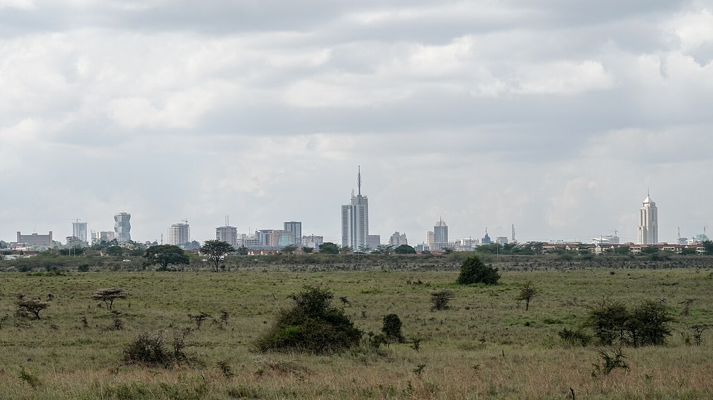
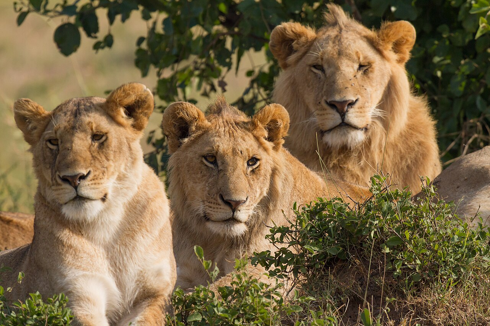
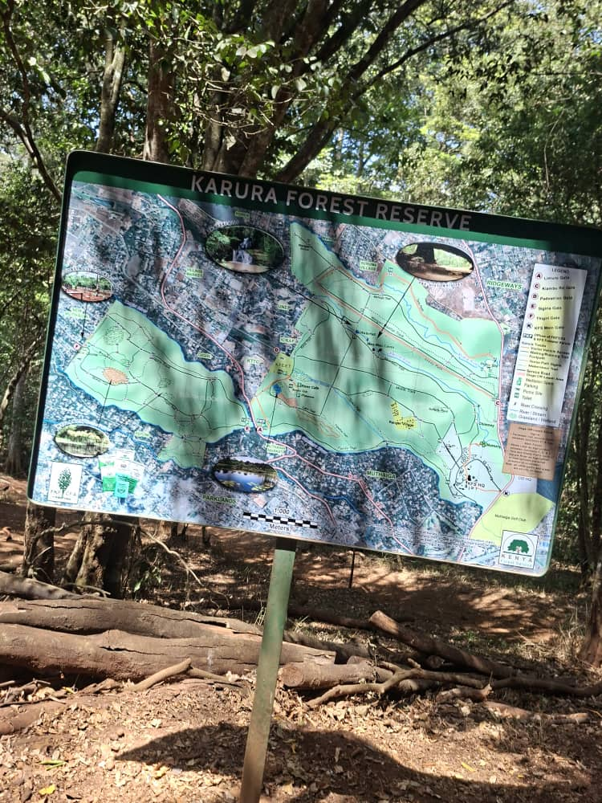
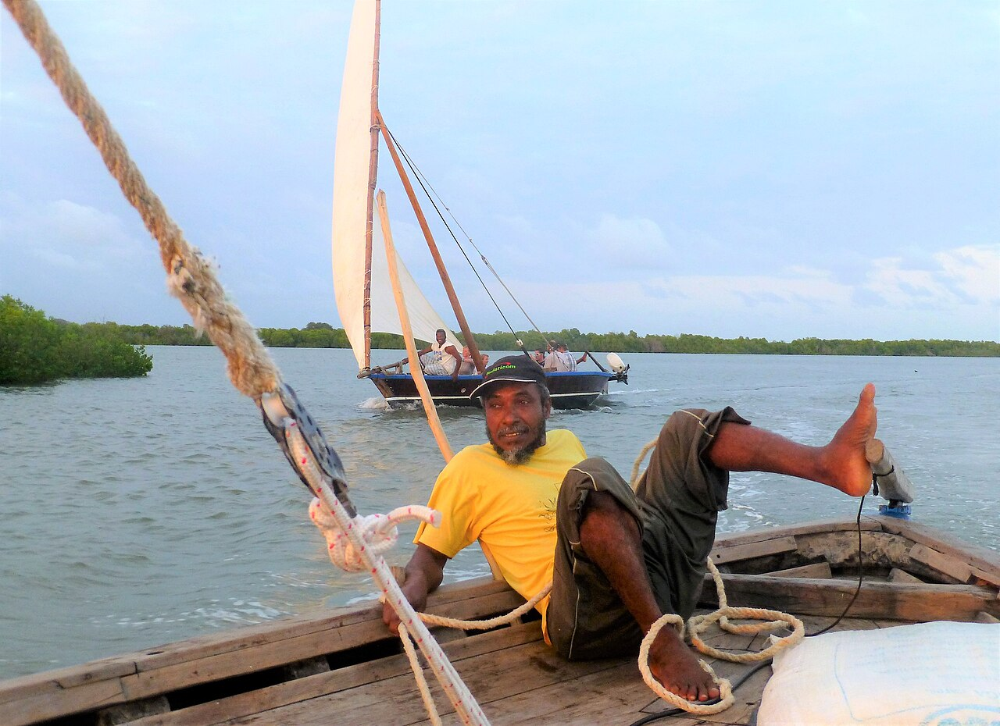
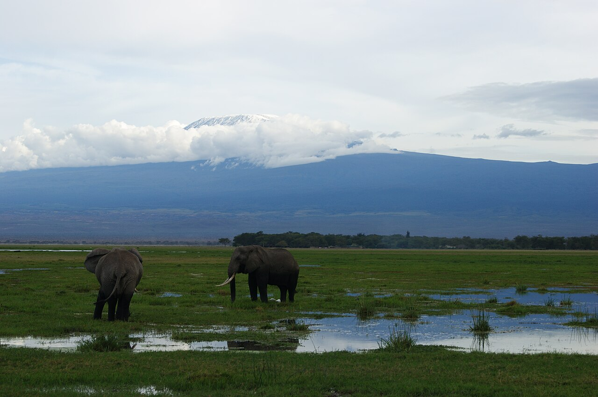
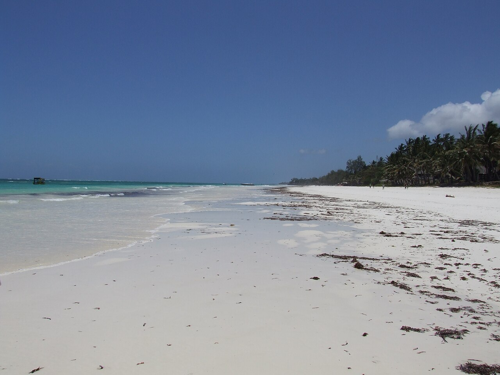

Nairobi City Walk
Downtown stories, markets and viewpoints with Wanjiru, a born-and-raised Nairobi guide.
Duration: 4 hours
Price: KES 3,500 per person
Each experience is led by a verified local guide. Prices are per person in Kenya shillings and include the guide; park fees, transport and meals are confirmed with the guide before you pay.

Downtown stories, markets and viewpoints with Wanjiru, a born-and-raised Nairobi guide.
Duration: 4 hours
Price: KES 3,500 per person

A full day on safari with Naserian, ending with a Maasai village visit and stories by the fire.
Duration: 12 hours
Price: KES 18,000 per person

Waterfalls, caves and quiet trails in Nairobi's green lung, with a guide who knows every path.
Duration: 3 hours
Price: KES 2,000 per person

Swahili architecture, donkey lanes and a sunset dhow ride with Yusuf, a Lamu old town native.
Duration: Full day
Price: KES 9,500 per person

Two days under Kilimanjaro watching elephant herds, with David's eye for photography spots.
Duration: 2 days
Price: KES 32,000 per person

White sand, a reef snorkel and Swahili seafood lunch with Amina, who grew up on the coast.
Duration: Full day
Price: KES 7,500 per person
Something else in mind? Request a custom trip and tell us where you want to go.